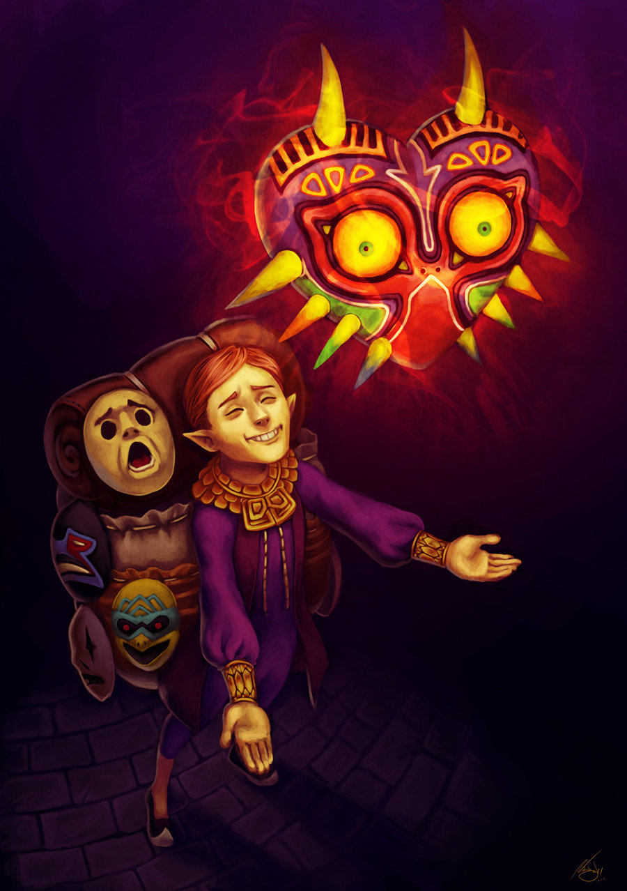

What is the Carnival of Time?
The Carnival of Time is the day at the very end of the Termina calendar where we celebrate the year gone by and commit it to our bygone memories. The Clock Tower opens and we cheer to the sound of the twelve chimes of midnight.
Terminans have been celebrating for as long as we can remember, donning our masks to celebrate the empty slate of the new year.
Special Guest
Happy Mask Salesman

The Happy Mask Salesmen is a very successful businessman hailing from Castle Town in Hyrule. He makes a profit selling and renting masks to the public. His business model has always revolved more around the enjoyment of his customers than turning a profit. He'll be coming by to spread some cheer with his special masks and his trademark smile.